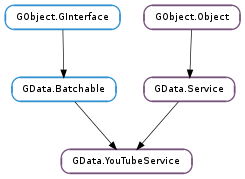

| static | get_primary_authorization_domain() |
| static | new(developer_key, authorizer) |
| finish_video_upload(upload_stream) | |
| get_categories(cancellable) | |
| get_categories_async(cancellable, callback, *user_data) | |
| get_categories_finish(async_result) | |
| get_developer_key() | |
| query_related(video, query, cancellable, progress_callback, *progress_user_data) | |
| query_related_async(video, query, cancellable, progress_callback, progress_user_data, callback, *user_data) | |
| query_standard_feed(feed_type, query, cancellable, progress_callback, *progress_user_data) | |
| query_standard_feed_async(feed_type, query, cancellable, progress_callback, progress_user_data, callback, *user_data) | |
| query_videos(query, cancellable, progress_callback, *progress_user_data) | |
| query_videos_async(query, cancellable, progress_callback, progress_user_data, callback, *user_data) | |
| upload_video(video, slug, content_type, cancellable) |
| Name | Type | Flags | Description |
|---|---|---|---|
| developer-key | str | r/w/c | Your YouTube developer API key. |
None
| Name | Type | Access |
|---|---|---|
| parent | GData.Service | r |
Bases: GData.Service, GData.Batchable
All the fields in the GData.YouTubeService structure are private and should never be accessed directly.
| Returns: | the service’s authorization domain |
|---|---|
| Return type: | GData.AuthorizationDomain |
The primary GData.AuthorizationDomain for interacting with YouTube. This will not normally need to be used, as it’s used internally by the GData.YouTubeService methods. However, if using the plain GData.Service methods to implement custom queries or requests which libgdata does not support natively, then this domain may be needed to authorize the requests.
The domain never changes, and is interned so that pointer comparison can be used to differentiate it from other authorization domains.
| Parameters: |
|
|---|---|
| Returns: | a new GData.YouTubeService, or None ; unref with GObject.Object.unref () |
| Return type: |
Creates a new GData.YouTubeService using the given GData.Authorizer. If authorizer is None, all requests are made as an unauthenticated user. The developer_key must be unique for your application, and as registered with Google.
| Parameters: | upload_stream (GData.UploadStream) – the GData.UploadStream from the operation |
|---|---|
| Raises: | GLib.GError |
| Returns: | the new GData.YouTubeVideo, or None ; unref with GObject.Object.unref () |
| Return type: | GData.YouTubeVideo |
Finish off a video upload operation started by GData.YouTubeService.upload_video (), parsing the result and returning the new GData.YouTubeVideo.
If an error occurred during the upload operation, it will have been returned during the operation (e.g. by Gio.OutputStream.splice () or one of the other stream methods). In such a case, None will be returned but error will remain unset. error is only set in the case that the server indicates that the operation was successful, but an error is encountered in parsing the result sent by the server.
| Parameters: | cancellable (Gio.Cancellable or None) – a Gio.Cancellable, or None |
|---|---|
| Raises: | GLib.GError |
| Returns: | a GData.APPCategories, or None ; unref with GObject.Object.unref () |
| Return type: | GData.APPCategories |
Gets a list of the categories currently in use on YouTube. The returned GData.APPCategories contains a list of GData.YouTubeCategory s which enumerate the current YouTube categories.
The category labels (GData.Category :label ) are localised based on the value of GData.Service :locale.
| Parameters: |
|
|---|
Gets a list of the categories currently in use on YouTube. self is reffed when this function is called, so can safely be unreffed after this function returns.
For more details, see GData.YouTubeService.get_categories (), which is the synchronous version of this function.
When the operation is finished, callback will be called. You can then call GData.YouTubeService.get_categories_finish () to get the results of the operation.
| Parameters: | async_result (Gio.AsyncResult) – a Gio.AsyncResult |
|---|---|
| Raises: | GLib.GError |
| Returns: | a GData.APPCategories, or None ; unref with GObject.Object.unref () |
| Return type: | GData.APPCategories |
Finishes an asynchronous request for a list of categories on YouTube, as started with GData.YouTubeService.get_categories_async ().
| Returns: | the developer key property |
|---|---|
| Return type: | str |
Gets the GData.YouTubeService :developer-key property from the GData.YouTubeService.
| Parameters: |
|
|---|---|
| Raises: | |
| Returns: | a GData.Feed of query results; unref with GObject.Object.unref () |
| Return type: |
Queries the service for videos related to video. The algorithm determining which videos are related is on the server side.
If video does not have a link with rel value http://gdata.youtube.com/schemas/2007#video.related, a GData.ServiceError.PROTOCOL_ERROR error will be thrown. Parameters and other errors are as for GData.Service.query ().
| Parameters: |
|
|---|
Queries the service for videos related to video. The algorithm determining which videos are related is on the server side. self and query are both reffed when this function is called, so can safely be freed after this function returns.
For more details, see GData.YouTubeService.query_related (), which is the synchronous version of this function.
When the operation is finished, callback will be called. You can then call GData.Service.query_finish () to get the results of the operation.
| Parameters: |
|
|---|---|
| Raises: | |
| Returns: | a GData.Feed of query results, or None ; unref with GObject.Object.unref () |
| Return type: |
Queries the service’s standard feed_type feed to build a GData.Feed.
Parameters and errors are as for GData.Service.query ().
| Parameters: |
|
|---|
Queries the service’s standard feed_type feed to build a GData.Feed. self and query are both reffed when this function is called, so can safely be freed after this function returns.
For more details, see GData.YouTubeService.query_standard_feed (), which is the synchronous version of this function.
When the operation is finished, callback will be called. You can then call GData.Service.query_finish () to get the results of the operation.
| Parameters: |
|
|---|---|
| Raises: | |
| Returns: | a GData.Feed of query results, or None ; unref with GObject.Object.unref () |
| Return type: |
Queries the service for videos matching the parameters set on the GData.Query. This searches site-wide, and imposes no other restrictions or parameters on the query.
Parameters and errors are as for GData.Service.query ().
| Parameters: |
|
|---|
Queries the service for videos matching the parameters set on the GData.Query. This searches site-wide, and imposes no other restrictions or parameters on the query. self and query are both reffed when this function is called, so can safely be freed after this function returns.
For more details, see GData.YouTubeService.query_videos (), which is the synchronous version of this function.
When the operation is finished, callback will be called. You can then call GData.Service.query_finish () to get the results of the operation.
| Parameters: |
|
|---|---|
| Raises: | |
| Returns: | a GData.UploadStream to write the video data to, or None ; unref with GObject.Object.unref () |
| Return type: |
Uploads a video to YouTube, using the properties from video and the file data written to the resulting GData.UploadStream.
If video has already been inserted, a GData.ServiceError.ENTRY_ALREADY_INSERTED error will be returned. If no user is authenticated with the service, GData.ServiceError.AUTHENTICATION_REQUIRED will be returned.
The stream returned by this function should be written to using the standard Gio.OutputStream methods, asychronously or synchronously. Once the stream is closed (using Gio.OutputStream.close ()), GData.YouTubeService.finish_video_upload () should be called on it to parse and return the updated GData.YouTubeVideo for the uploaded video. This must be done, as video isn’t updated in-place.
In order to cancel the upload, a Gio.Cancellable passed in to cancellable must be cancelled using Gio.Cancellable.cancel (). Cancelling the individual Gio.OutputStream operations on the GData.UploadStream will not cancel the entire upload; merely the write or close operation in question. See the GData.UploadStream :cancellable for more details.
Any upload errors will be thrown by the stream methods, and may come from the GData.ServiceError domain.